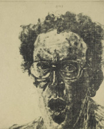

| |
Avigdor Arikha From Life
Drawings and Prints 1965-2005
Room 90
29 June 2006 - 7 January 2007
Avigdor Arikha is one of the outstanding draughtsmen
of his generation. Born of Jewish parents in Romania in 1929, he was
rescued from a Nazi concentration camp when his drawings were brought
to the notice of the Red Cross. He arrived in Palestine in 1944 and
trained as an artist in Jerusalem. He finally settled in Paris in 1954
where he became a lifelong friend of the Irish writer Samuel Beckett.
The works in this exhibition all come from the years after 1965 when
he renounced abstraction and committed himself to working only from
life. His subjects – self-portraits, portraits of his wife, the poet
Anne Atik, his friends, interiors of his Paris studio flat, and seemingly
mundane objects like an umbrella – all reveal an acute intensity of
vision.
The
exhibition is accompanied by a fully-illustrated catalogue
by Duncan Thomson and Stephen Coppel
of the artist's gift of 100 prints and drawings
to the British Museum
French Drawings: Clouet to Seurat
Room
90
Part 1 - drawings from about 1500-1700
29 June -1 October 2006
Part 2 - drawings from about 1700-1900
early October - 7 January 2007
The
British Museum has one of the finest collections of French drawings
outside France. This selection traces all the major artistic developments
from around 1500 until 1900, from the Renaissance until the Post-Impressionists.
The draughtsmen include many famous names, such as Jean Clouet, Claude
Lorrain, Nicolas Poussin, Antoine Watteau, Eugène Delacroix and Edgar
Degas.
accompanied
by a fully-illustrated catalogue
by Perrin Stein and Martin Royalton-Kisch
The
exhibition has been organized by the British Museum and the Metropolitan
Museum of Art, New York
Drawings from the collection of Arthur Feldmann
until 16 November 2006
Room 90
This display is in memory of Dr Arthur Feldmann (1877-1941),
a Jewish Czech lawyer whose collection of old master drawings was forcibly
seized by the Nazis in 1939. Four of his drawings were acquired by the
British Museum without knowledge of their earlier history in the late
1940s and have recently been the subject of a claim from the Dr Feldmann's
heirs. They expressed their wish for the drawings to remain in the British
Museum. After the case was settled, they presented the Museum with a
fifth drawing from the collection which had recently been returned to
them as a spontaneous gesture of good will by a private collector.
Gauguin in the Pacific
until 16 November 2006
Room 90
A small display of Gauguin's highly evocative woodcuts and monotypes
inspired by his encounter with Tahitian culture in the late 19th century
complements the exhibition Power and Taboo:
sacred objects from the Pacific
James
Boswell: a centenary display
until 16 November 2006
Room 90
James
Boswell (1906-1971) made his name as a keen observer of political and
social life in Britain during the 1930s. His most significant work was
produced in Iraq during the Second World War where he was stationed
in 1942-43 and worked as an unofficial war artist. This display of his
watercolours and drawings comes from a major gift presented to the British
Museum by the artist's widow Ruth Boswell. It marks his centenary which
is also being honoured at Tate Britain.
|
|

Avigdor
Arikha (b. 1929), Self-portrait with open mouth, 1973 Sugar aquatint.
Reproduced by permission of the artist.
|
|
|
|